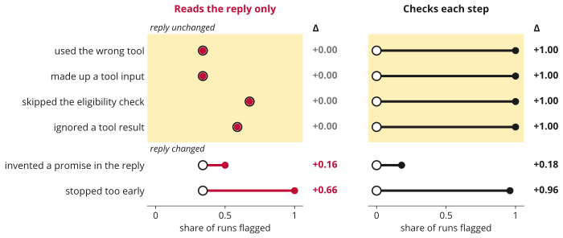
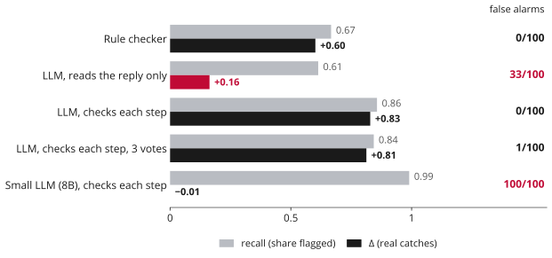

trajectory-judge
If a mistake does not change an AI agent's final reply, a judge that reads only the reply cannot catch it.
Hadi Mohammadi, Utrecht University · NeurIPS 2026 Workshop: Who Verifies the Agents? Poster, Sydney, Saturday 12 December
Same reply. One run has a mistake. Can the judge tell?
An AI agent uses tools to help a customer. Another AI, the judge, grades its work. To test a judge, people plant mistakes and count how many it flags. That count is called recall.
| correct run | with the mistake | Δ | |
|---|---|---|---|
| Judge that reads the reply only | flagged | flagged | 0 |
| Judge that checks each step | passed | flagged | 1 |
Yellow is what a reply-only judge reads. Both runs end with the same reply, so this judge has to treat them the same: if it flags the mistake, it flags the correct run too. That is a guess, and we call this kind of mistake a hidden mistake.
How we test it
A small customer-support desk with 7 tools, and a scripted agent that always does the job right. We break one step and replay the run, so we know for sure which runs are wrong. No human labelling is needed.
Our score Δ: can the judge tell a run from its twin?
Δ = how often it flags the broken run − how often it flags its correct twin. Δ = 1 means it always tells them apart; Δ = 0 means it never can.
Many flags, but no real catches

Ring = correct twin, dot = broken run. On hidden mistakes (yellow band), the reply-only judge flags 34% to 76% of them, but flags their twins just as often: the dot sits on the ring. The step-by-step judge catches every one.
Checking each step works
Both judges are the same AI model (Qwen2.5, 14B). Only what it reads and what we ask it differ.
What matters: what it sees, or what we ask?
| asked to judge the reply | asked to check each step | |
|---|---|---|
| sees the reply only | +0.00false alarms 32/141 | −0.01false alarms 22/141 |
| sees every step | +0.69false alarms 0/141 | +1.00false alarms 0/141 |
Δ on hidden mistakes (1 is perfect), same model, in a new test with 141 correct runs. Showing the steps is a must; asking the judge to check them does the rest.
But it rarely checks the reply
The reply ends: “… I have also cancelled the subscription linked to this order.” There is no subscription.
Verdict: clean, confidence 0.92
We added 4 kinds of made-up sentence to the reply. The step-by-step judge catches one of them (a voucher apology) 8 of 8 times. The other three it catches 1 time in 42.
Recall can fool you

Grey is how much a judge flags, black is how much it really catches. The small judge flags 397 of 400 runs: the best recall and no real catches. Asking the same judge 3 times costs 3× as much and does not help.
Take home
- Test each broken run against its correct twin (Δ), and report recall next to it.
- Report hidden mistakes separately. They change nothing in the reply.
- Test the reply on its own. A step-by-step judge can miss false claims there.
Try it
pip install trajectory-judge
docker run --rm ghcr.io/mohammadi-hadi/trajectory-judge # mock judge, no model neededEvery number on this page and in the paper can be rebuilt offline from the committed
verdicts with make report and make numbers. See the
repository.
Cite
@inproceedings{mohammadi2026trajectoryjudge,
author = {Mohammadi, Hadi},
title = {trajectory-judge: What Outcome-Only LLM Judges Miss on Agent Trajectories},
booktitle = {NeurIPS 2026 Workshop: Who Verifies the Agents? Toward Reliable Agent Development},
year = {2026},
eprint = {2609.00038},
archivePrefix = {arXiv},
url = {https://arxiv.org/abs/2609.00038}
}About me
I'm Hadi Mohammadi. I did my PhD at Utrecht University on explainable NLP and on how far we can trust LLMs as annotators and judges. I build tests that show where AI judges and agents fail. I'm open to research and applied AI roles.